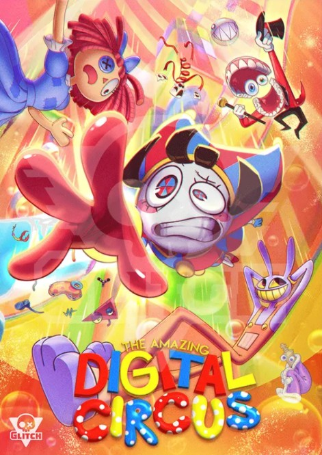
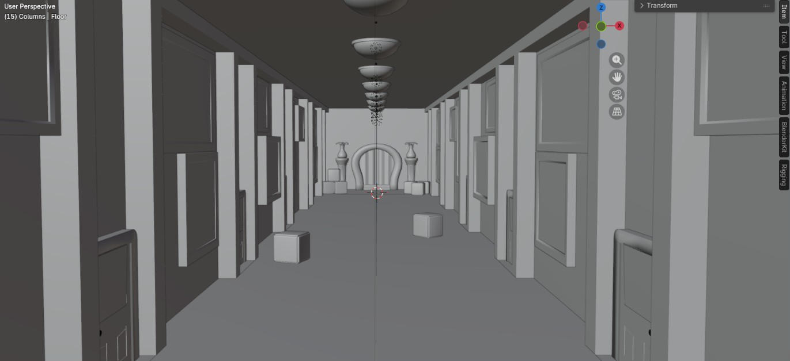
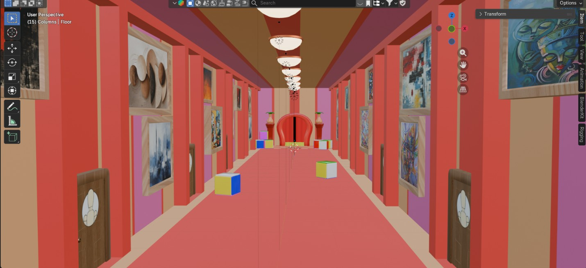

Info
1 personne | temps : ~2 semaines | outils : Blender, Unity, C#
Contexte
Rendu de modélisation réalisé dans le cadre des études : la consigne imposée était de réaliser un corridor.
Objectif
Mon objectif personnel était d'aller au-delà de la simple contrainte technique, en réalisant un corridor capable de faire entrer le joueur dans une ambiance afin de lui offrir une expérience immersive.
Intro
Ce rendu s'inscrivait dans un délai de 3 mois. Il s'agit de ma 3e tentative de corridor : j'avais d'abord voulu réaliser un corridor végétal à l'aide des Geometry Nodes de Blender, une approche qui s'est révélée bien plus difficile à maîtriser que prévu. J'ai donc choisi de me réorienter vers une reproduction du couloir des dortoirs du film d'animation The Amazing Digital Circus, un univers plus simple à reproduire et surtout plus réaliste à tenir dans le temps imparti.

Processus
J'ai choisi l'univers de TADC car il repose visuellement sur des couleurs primaires et des formes géométriques simples, ce qui le rendait plus accessible à reproduire stylistiquement. J'ai ensuite appliqué des références de taille précises pour le corridor et l'ensemble des assets, avant d'exporter le tout vers Unity une fois les textures terminées.


Enfin, j'ai ajouté le personnage, un système audio (audio manager) et des Rigidbody sur certains cubes, pour donner un élément d'interaction au corridor des ajouts qui n'étaient pourtant pas exigés par la consigne initiale.
Apprentissage
Ce projet m'a surtout appris à faire avancer plusieurs bases essentielles en parallèle plutôt que se concentrer à bien faire une chose mais laisser le reste de côté : les 3C de mon personnage (Character, Controller, Camera), et les 3S (Son, Style, Sensation) nécessaires pour rendre l'ensemble crédible et immersif, au sein d'un explorable dans lequel le joueur peut se déplacer librement.